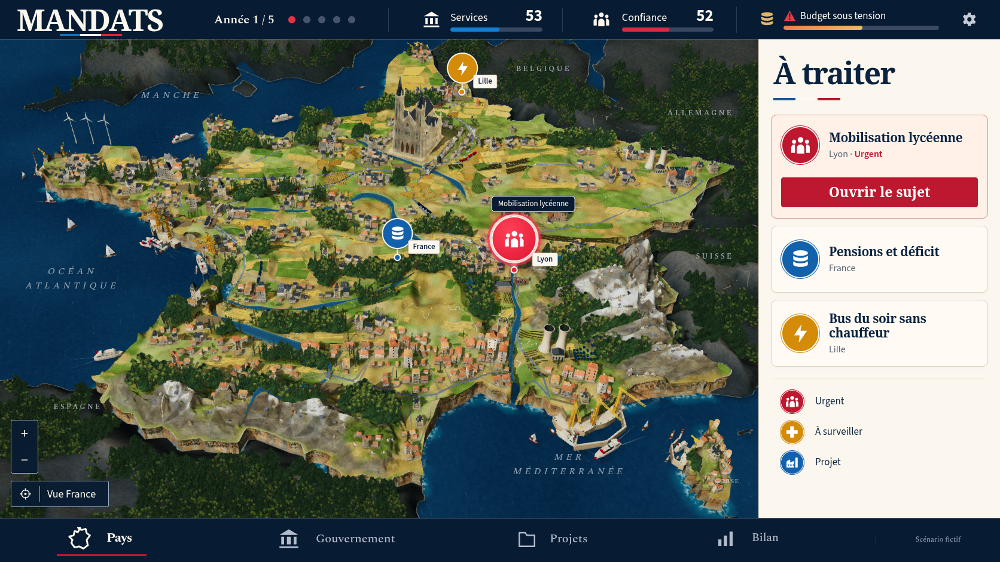
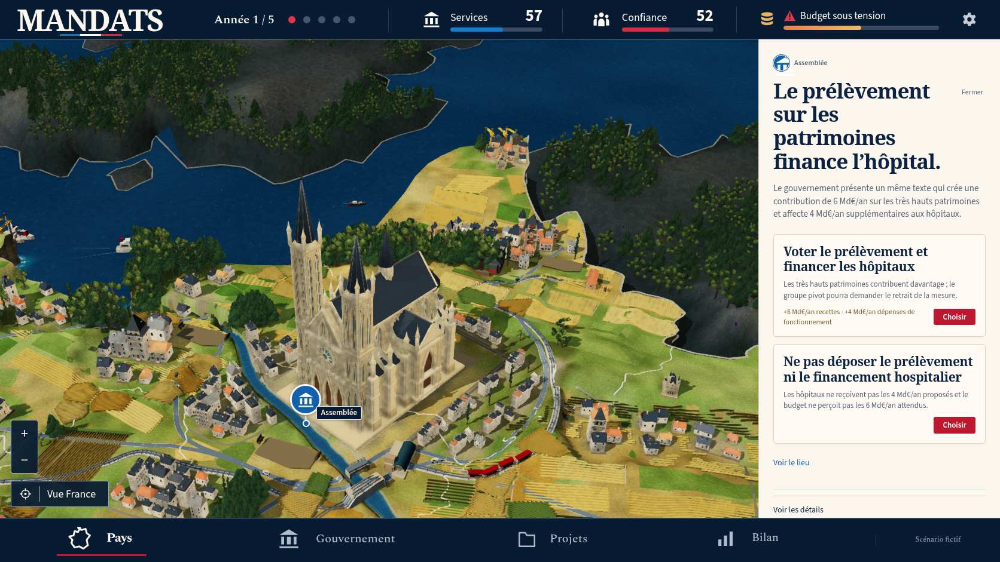
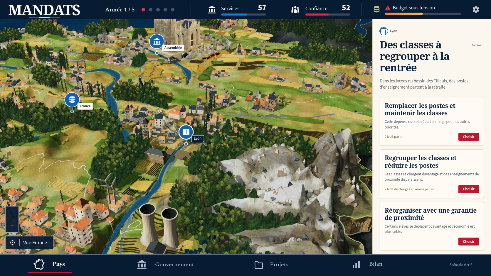
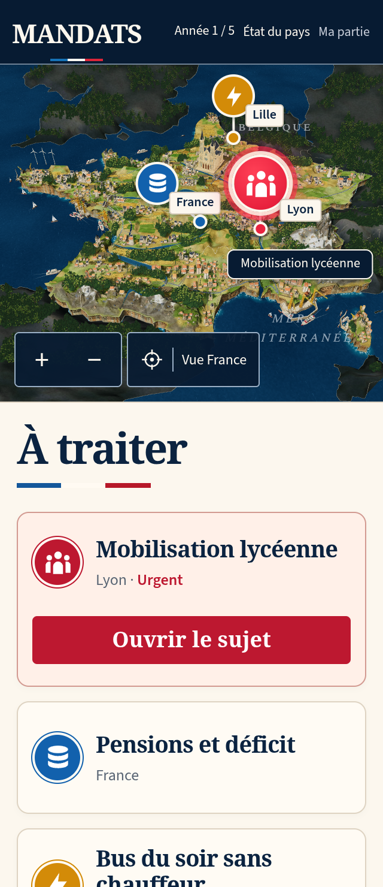
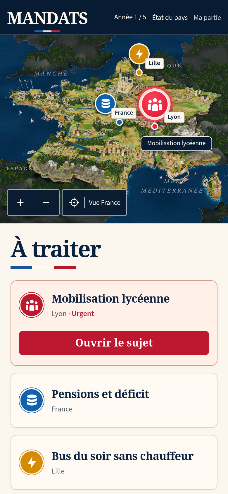

MANDATS : comparaison 47
Le diorama reste en dessous de la référence. La reconstruction continue. La PR 194 reste en brouillon ; les contrôles techniques ne constituent pas une validation artistique.
La vue comparée provient d’une vraie décision scolaire dans la partie v12. Les chiffres et événements fictifs de la référence ne sont pas injectés dans le jeu.


Référence confirmée.Jeu réel, obtenu avec ses contrôles.
| Partie | Modification réelle | Différence encore visible |
|---|
| Bois | Couronnes françaises aux proportions naturelles des modèles chargés, avec une échelle uniforme. Les enveloppes complètes dégagent les maisons et monuments. | Le détail des feuillages et leur composition restent moins riches que dans la référence. |
| Implantation | Les sections basses des troncs sont posées sur les triangles affichés. Arbres et bâtiments partagent l’index du terrain original. Les propositions sans support sont refusées. | Les contrôles concernent les scènes observées, pas toutes les futures situations ou collisions. |
| Constructions | La visibilité des arbres tient compte des enveloppes des couronnes et des projets financés, bloqués ou livrés. La rénovation hospitalière observée atteint sa livraison avec un bâtiment dégagé. | Le terrain observé était déjà dégagé : ce parcours ne prouve pas le masquage et la restauration d’un arbre chevauchant un chantier. |
| Relief, eau, architecture | Terrain, modèles GLB, éclairage et textures de la passe 46 conservés. Les arbres plus larges modifient l’occupation réelle des faces. | Matériaux et bourgs moins riches, socle régulier par endroits, surfaces alpines encore simples et sortie méditerranéenne encaissée. |

Cathédrale conservée avec ses vraies ouvertures et textures.
Lyon puis un clic sur Réduire la carte.
320 × 740, DPR 2, vraie décision scolaire.
390 × 844, DPR 2, vraie décision scolaire.Preuves et limites
Douze captures natives du build complet enregistrent zéro erreur de page, console, requête et HTTP. Les empreintes des réponses JS/CSS correspondent au build figé. Les vues 320 et 390 pixels, DPR 2, restent sans débordement ; les entrées sauvegardées viennent des vrais choix du jeu.
Le check complet passe 1 082 vérifications, les trois cibles TypeScript, le build et le pré-rendu. La suite 3D originale complète passe 23 cas actifs et neuf omissions configurées en 18,5 minutes ; la suite sociale passe 13 cas et trois omissions configurées en 11,8 minutes. Aucun échec ou test instable. Les contrôles originaux ciblés de DPR, portrait et paysage WebKit passent également, sans changement de tests ou délais.
Deux fabrications reproduisent exactement le terrain et son manifeste : 17 maillages, 292 817 triangles, 337 174 sommets, 10 029 351 octets compressés. Les modèles GLB, le cube d'éclairage et les textures distribuées sont conservés depuis la passe 46.
Les sections basses des 2 544 troncs français contrôlés restent soutenues après les fractures : zéro sondage sans support, garde maximale −0,00099947. Les bases des 188 rochers atteignent −0,000776993. Les seize monuments observés ne présentent aucun recouvrement horizontal de canopée. La rénovation hospitalière réelle est financée au tour 1 et livrée au tour 3, avec zéro recouvrement de couronne ; son terrain était déjà dégagé et aucun arbre n’y est masqué. Ce parcours ne prouve pas la restauration d’un arbre chevauchant un chantier.
La CI du commit précédent 42f33d8 valide les suites 3D/sociale, story, board, launch, canonical et le workflow général. Ces succès concernent la passe 46. Les résultats de la passe 47 et la conformité artistique restent distincts.
Manifeste · Captures natives · Build · Appuis des rochers · Monuments et canopées · CI précédente · Implantation des troncs